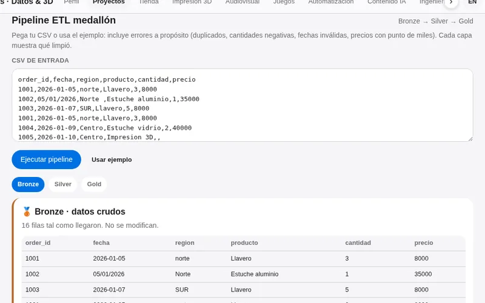
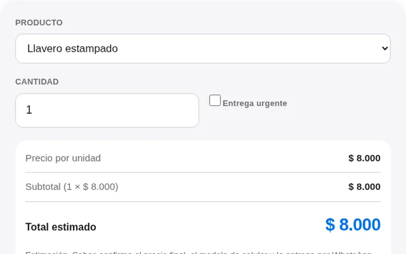
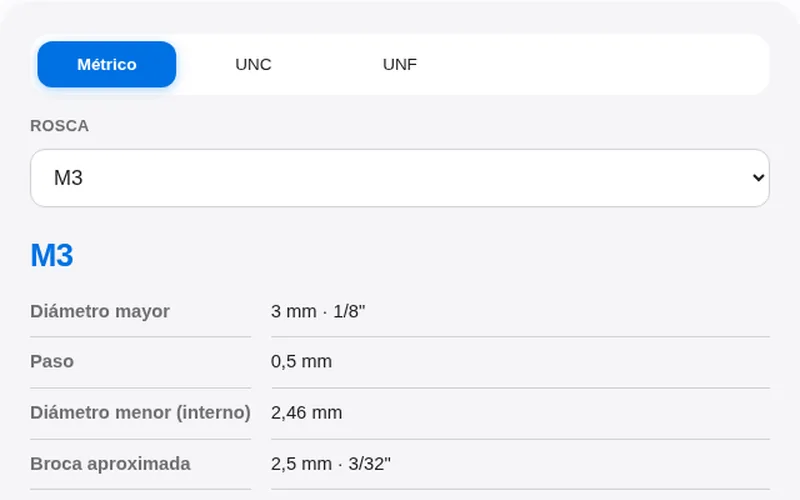
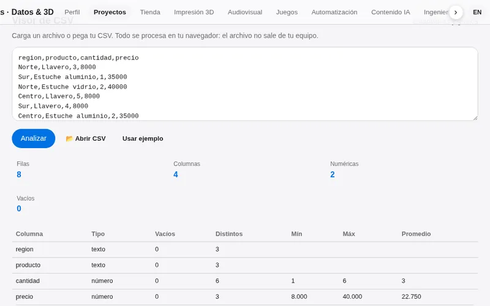
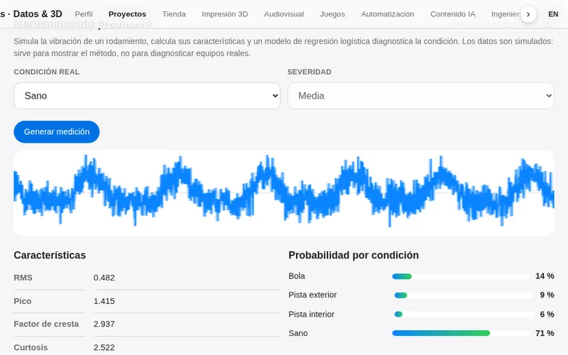
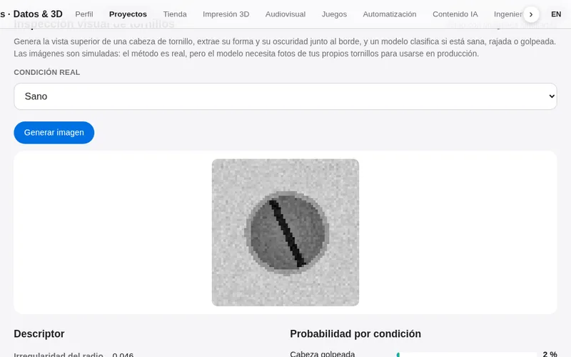
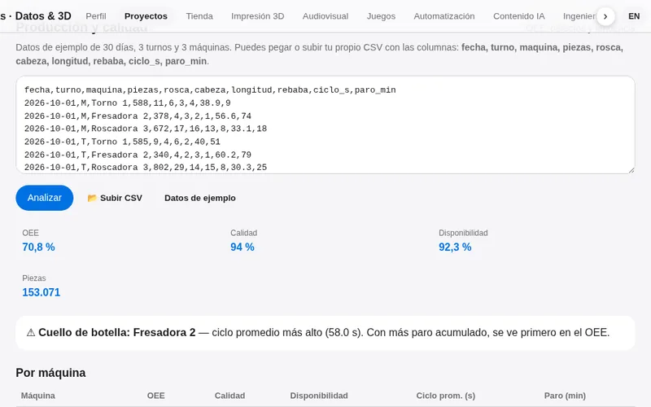
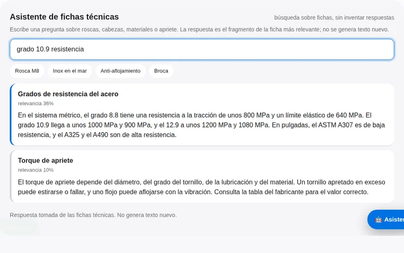
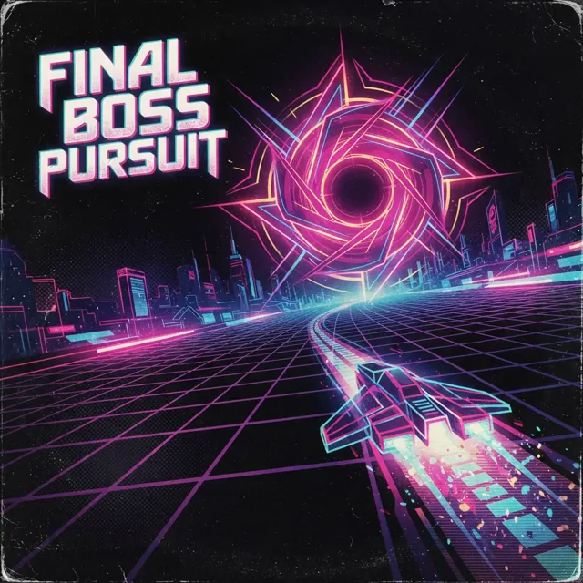
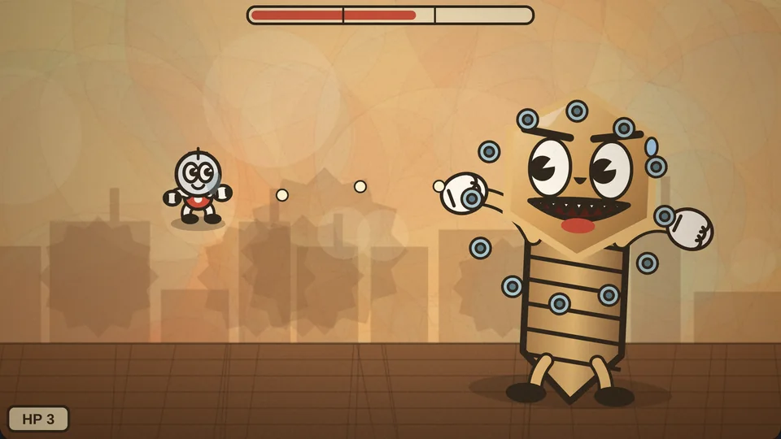

Pareja ilustrada
Ideal para regalar: tu foto o una ilustración de los dos en un llavero redondo con acabado brillante.
Pedir este diseño ›Datos · Automatización · IA · Ingeniería · 3D
Soy Juan Sebastián Sánchez, ingeniero de datos y automatización. Aquí encuentras mi perfil, mis servicios, herramientas propias y productos personalizados.
Estampados de alta definición sobre aluminio y vidrio. Impresión 3D para cualquier idea.
Tu foto, nombre o logo sobre llaveros con lámina de aluminio. Colores vivos y muy resistentes.
Estampado a todo color sobre lámina de aluminio. Acabado brillante y duradero.
Estampado sobre vidrio con efecto espejo y una profundidad de color increíble.
Prototipos, repuestos, figuras y piezas funcionales en PLA.
Toca una foto para verla más grande y pídela por WhatsApp.
Ideal para regalar: tu foto o una ilustración de los dos en un llavero redondo con acabado brillante.
Pedir este diseño ›Tierno y colorido. También se puede hacer con tu mascota o tu ilustración.
Pedir este diseño ›Tu logo o mascota de marca a todo color en un estuche para celular. Ideal para negocios y regalos corporativos.
Pedir este diseño ›Figura con articulaciones móviles impresa en 3D, ideal como llavero o para coleccionar.
Pedir este diseño ›Elige, personaliza y pídelo directo por WhatsApp.
Llaveros y estuches que dicen algo de quien los lleva.
Un regalo con su foto o una ilustración de los dos.
Tu perro o gato en un llavero que llevas a todas partes.
Tu logo o mascota de marca en llaveros y estuches para clientes y equipo.
Recordatorios únicos para tus invitados. Pregunta por varias unidades.
Escoge un diseño del catálogo o crea el tuyo en el diseñador.
Pulsa pedir por WhatsApp y adjunta tu foto, logo o idea.
Revisamos los detalles, el modelo de celular y te enviamos la cotización.
¿Regalos, eventos o tu empresa? Pregunta por pedidos de varias unidades.
Conecta tus herramientas y deja que los procesos trabajen por ti.
Conectamos WhatsApp, Google Sheets, CRM, correo y tiendas en flujos automáticos.
Integraciones por API, bots, reportes automáticos y sincronización de datos.
Redes sociales, captación de clientes, embudos, campañas y mensajes automáticos.
Atención, agendamiento y seguimiento de clientes sin intervención manual.
Imágenes, videos y textos creados con inteligencia artificial para que tu marca destaque en redes.
Fotos de producto, mockups, logos y piezas gráficas generadas con IA, listas para publicar.
Videos cortos, animaciones de producto y anuncios para Instagram, TikTok y WhatsApp.
Copys, guiones, descripciones y un calendario de contenido pensado para tu negocio.
Locuciones, presentadores virtuales y contenido automatizado conectado con n8n.
Automatización industrial, de la idea a la puesta en marcha.
Diseño e implementación de procesos automatizados y modernización de líneas.
Desarrollo, modificación y depuración de programas PLC, HMI y control de procesos.
Apps web, paneles de datos y herramientas a la medida de tu operación.
Diagnóstico, documentación técnica y acompañamiento en tus proyectos.
Ingeniero de Datos Junior · Automatización ETL, Cloud (AWS), Machine Learning e IA
Perfil profesional
Ingeniero en Automática Industrial y maestrante en Ciencia de Datos e Inteligencia Artificial, con perfil de Ingeniero de Datos Junior. Diseño e implemento pipelines ETL con arquitectura medallón (Bronze/Silver/Gold), trabajo con bases de datos relacionales (SQL, MySQL), programo en Python y R, y desarrollo flujos de automatización con n8n, APIs REST y agentes de IA. Combino la ingeniería industrial con la analítica de datos para garantizar la integridad, disponibilidad y calidad de la información, bajo metodologías de mejora continua (PHVA). Mantengo un portafolio público con proyectos, herramientas propias y servicios de automatización, datos e impresión 3D.
Analizo y valido información técnica y operativa de clientes para estructurar soluciones integrales, asegurando la calidad y trazabilidad de los registros comerciales.
Logro: Diseñé e implementé un chatbot con IA para el canal web, integrado a un pipeline de automatización en n8n que extrae, valida y enruta automáticamente reportes e información hacia las áreas responsables.
Lideré la captura y el análisis de variables críticas de producción y control de calidad, garantizando la confiabilidad de los datos del proceso de manufactura.
Logro: Identifiqué cuellos de botella y optimicé los tiempos de ciclo mediante el análisis de datos operativos de maquinaria bajo metodologías ágiles de mejora continua, incrementando la productividad del área.
Arquitectura de extracción, transformación y carga con Python, n8n y consumo de APIs REST para consolidar bases de datos centralizadas.
Impacto: Eliminación del 100% de la digitación manual, con datos íntegros, estandarizados y confiables para el análisis ejecutivo.
Proceso ETL sobre cinco archivos Excel del Instituto Nacional de Salud, con scripts de extracción, transformación y carga, arquitectura medallón y un dashboard HTML para visualizar los resultados.
Integración de una tabla de ventas en MySQL (5.000 registros) con 50.000 eventos logísticos en Excel, unidos por identificador de pedido. Incluye análisis exploratorio, arquitectura medallón, 10 preguntas de negocio y ejecución automatizada con schedule.
Arquitectura y servicios Cloud (AWS), modelos de Machine Learning, diseño de procesos ETL, programación estadística en R y Python y analítica avanzada.
📍 Cali, Colombia · ✉️ jsebasurb@hotmail.com · 📞 +57 301 389 2534
Escribir por WhatsAppDatos, automatización, web e ingeniería. Toca una miniatura para abrir el proyecto.

Extracción, transformación y carga con Python, n8n y APIs REST. Eliminó el 100% de la digitación manual y dejó datos estandarizados para análisis ejecutivo.
Proceso ETL sobre reportes del Instituto Nacional de Salud (dengue, IRAG, tuberculosis) con arquitectura medallón y dashboard HTML.
Integración de 5.000 ventas en MySQL con 50.000 eventos logísticos en Excel: EDA, medallón, 10 preguntas de negocio y ejecución con schedule.
Chatbot web integrado a un pipeline en n8n que extrae, valida y enruta reportes automáticamente hacia las áreas responsables.
Sitio en GitHub Pages con capas Bronze/Silver/Gold, build en Python, despliegue con GitHub Actions y herramientas propias.
Sensores e instrumentación industrial con ingesta en tiempo real, validación automática de variables críticas y alertas de control.

Estampados en aluminio y vidrio, impresión 3D y diseñador de productos conectado a WhatsApp.
Avatar de inteligencia artificial que convierte tendencias, bailes, audios virales y memes en videos cortos para redes.

Ficha técnica de roscas métricas, UNC y UNF: diámetro, paso, diámetro menor y broca aproximada, con conversiones de paso y longitud.

Carga un CSV y obtén estadísticas por columna y una gráfica por categoría. Todo se procesa en el navegador.

Modelo que detecta fallas en rodamientos a partir de la vibración: características, regresión logística y demo con señales simuladas. Exactitud de 70 % en prueba.

Clasifica cabezas de tornillo sanas, rajadas o golpeadas con un descriptor físico y regresión logística. Demo con imágenes simuladas: 74 % de exactitud.

OEE por máquina, Pareto de defectos y tendencia diaria a partir de un CSV de producción. Verificado contra un cálculo independiente.

Busca la respuesta en fichas técnicas de roscas y tornillos con TF-IDF. Muestra fragmentos de las fichas; no inventa texto. Recall@1 de 94 %.
Simulación de una línea de cuatro estaciones: asigna operarios para evitar atascos. Un juego de planificación con reglas de derrota reales.
Preguntas por niveles, curiosidades y referencias de roscas, cabezas y puntas. Incluye la academia publicada en su propio sitio.
De tu idea a una pieza real. Imprimo prototipos, repuestos y piezas funcionales en PLA con mi Dremel DigiLab 3D20.
Mi equipo
Una impresora 3D de cámara cerrada con tecnología FDM: derrite filamento de PLA y construye la pieza capa por capa.
Abre un archivo STL y míralo en 3D. Te muestro sus medidas, si cabe en la impresora y cuánto PLA necesitaría (estimación aproximada). Tu archivo se queda en tu dispositivo.
Más allá de lo básico: acabados y juegos de colores para que tu pieza destaque.
Piezas en PLA fotoluminiscente: se cargan con la luz y brillan cuando se apaga. Ideales para llaveros, figuras y decoración.
Piezas con tres colores, logradas con cambios de filamento por capas o con partes ensambladas. Para llaveros, letreros y figuras.
Piezas sueltas o sets completos, en los colores que elijas.
Figuras con articulaciones móviles, ideales como llavero o para coleccionar.
Prueba una idea en físico antes de fabricarla en serie.
Piezas de reemplazo para equipos, muebles y herramientas, según el tamaño y el material.
Cajas para sensores, placas electrónicas y proyectos de automatización.
Llaveros, figuras y detalles personalizados.
Maquetas y piezas para trabajos, ferias y semilleros.
Soportes, ganchos y organizadores a tu medida.
Envíame un archivo STL, OBJ o 3MF, o cuéntame qué necesitas y vemos cómo lograrlo.
Reviso medidas, orientación y si necesita soportes, y te confirmo si cabe en la impresora.
Preparo el archivo en el programa de laminado: altura de capa, relleno y soportes.
La pieza se construye capa por capa en PLA.
Retiro los soportes, reviso la pieza y coordinamos la entrega.
Con esta impresora trabajo solo con PLA, incluidos colores especiales como el que brilla en la oscuridad. Si tu pieza necesita PETG, ABS o un material flexible, cuéntame tu caso.
Usa paredes de al menos 1,2 mm para que la pieza sea resistente.
Los ángulos de más de 45° sobre el vacío suelen necesitar soportes.
Deja 0,2 a 0,3 mm de holgura entre piezas que deben encajar o moverse.
Las capas son más débiles entre sí: orienta la pieza según el esfuerzo que va a soportar.
Los agujeros salen un poco más pequeños; para tornillos, suma unos 0,2 mm al diámetro.
Hasta 230 × 150 × 140 mm. Las piezas más grandes se pueden dividir y pegar.
Videos cortos, avatares con IA y animación para redes sociales. Mi canal: Akazu IA.
Mi canal de YouTube
Un creador de contenido virtual: un avatar de inteligencia artificial que toma tendencias, bailes, audios virales y memes y les da un giro propio.
Se actualiza solo con lo que subo al canal.
Al reproducir se carga YouTube en modo de privacidad mejorada.Un presentador virtual para tu marca o tu canal.
Videos verticales listos para YouTube, Instagram y TikTok.
Animaciones y efectos a partir de ideas, imágenes o audio.
Ideas y guiones para publicar con constancia.
Veintiún juegos hechos por mí: arcade para el celular, ejercicios de agilidad mental y un reto de entrevista que termina con tu perfil. Tus récords se guardan en este dispositivo.
Un robot corre por una fábrica. Salta los tornillos y los engranajes, y agáchate ante los drones. Cada 300 puntos sube de nivel y la velocidad aumenta.
Toca para saltar y mantén para saltar más alto. Toca el piso (parte baja) para agacharte. En teclado: espacio salta, flecha abajo agacha.Apila capas como lo haría una impresora 3D. Lo que sobresale se corta, y los aciertos perfectos recuperan ancho. ¿Cuántas capas logras?
Toca para soltar la capa justo encima de la anterior. En teclado: espacio.Gira sin parar entre dos órbitas. Cambia de carril para esquivar los obstáculos rojos y recoge la energía dorada para sumar más puntos.
Toca para cambiar de órbita. En teclado: espacio.Recoge paquetes de datos y crece sin chocar contigo misma. Los bordes te llevan al otro lado y los paquetes dorados valen triple.
Desliza el dedo para girar. En teclado: flechas o WASD.Inclina tu celular para rodar un balín de acero por el laberinto. Usa el acelerómetro: evita los agujeros, recoge tornillos de oro y llega a la meta antes de que se acabe el tiempo.
Inclina el celular para mover el balín. Se calibra con la posición en la que empiezas; pulsa ↺ para recalibrar. En iPhone, acepta el permiso de movimiento. En computador: flechas o arrastra.Baila con Akazu, el avatar de IA de mi canal. Toca cada carril cuando la nota llegue a la línea, encadena combos y trata de llegar a 500 seguidores. La música y el ritmo suben poco a poco.
Toca el carril (izquierda, centro o derecha) cuando la nota llegue a la línea brillante. Con sonido se disfruta más. En teclado: A, S, D o las flechas.Eres el inspector de una fábrica de tornillos: el jefe da una orden y solo debes aprobar los tornillos perfectos que la cumplen. ¡Cuidado con los doblados, rajados y sin rosca! La orden cambia cada 8 tornillos.
Toca la mitad derecha para aprobar y la izquierda para rechazar. Tienes 3 vidas. En teclado: flecha derecha aprueba, izquierda rechaza.
♪ Final Boss PursuitCorre en 3D por una pista de neón al ritmo de «Final Boss Pursuit». Cambia de carril, salta los bloques bajos, esquiva los muros y recoge energía mientras el vórtice del jefe late con la música. Tienes 3 vidas y recuperas una si aguantas 20 segundos sin chocar.
Desliza a izquierda o derecha para cambiar de carril, y toca o desliza hacia arriba para saltar (hacia abajo caes rápido). También puedes tocar los costados para cambiar de carril. En teclado: flechas o A/D, y espacio para saltar. Con sonido se disfruta más.
Un pequeño héroe de guantes blancos y ojos de pastel se enfrenta a Sir Torque, un tornillo gigante, malvado y muy exagerado. Dibujo animado de los años 30 con acuarela, grano de película vieja y música de swing. Esquiva tuercas y arandelas, y cuidado con el martillazo: tiene tres fases.
Arrastra el dedo para moverte: disparas solo. Toca rápido para esquivar con un salto de invencibilidad. En teclado: flechas o WASD, y espacio para esquivar. Funciona mejor con sonido.Tu planta tiene cuatro estaciones: corte, torneado, roscado y control de calidad. Asigna operarios a las estaciones para que las piezas fluyan. Si una estación se bloquea 3 veces, se acaba la línea. Cada pieza buena suma 10 puntos.
Toca una estación para asignarle un operario o quitárselo. Al inicio tienes 2 operarios y llegan más con el tiempo. En teclado: teclas 1 a 4.Ejercicios cronometrados como los de las pruebas de selección: cálculo, atención, razonamiento y memoria. Es solo práctica, no una prueba psicométrica oficial.
Elige el reto rápido (6 pruebas) o el completo (10): cálculo, lógica, atención, control de impulsos, memoria, planificación (Torre de Hanoi, puzzle deslizante), flexibilidad y rotación mental. Al final obtienes tu perfil con gráfica radar, análisis, plan de práctica y progreso, y puedes copiarlo o descargarlo como imagen o texto.
Cada prueba te explica qué hacer antes de empezar. El reto rápido dura unos 5 minutos y el completo unos 9. En teclado: números 1 a 4, flechas y espacio.Suma, resta y multiplica de cabeza contra el reloj. Cada acierto sube el nivel; cada error te quita 3 segundos.
Toca la respuesta correcta entre cuatro opciones. En teclado: 1 a 4.La palabra dice un color pero está escrita con otro. Toca el color de la tinta… hasta que la regla cambie y debas tocar lo que dice la palabra.
Toca el color correcto según la regla de arriba. La regla cambia cada 8 respuestas. En teclado: 1 a 4.Descubre el patrón de cada serie numérica y elige el número que sigue. Hay sumas, multiplicaciones, saltos crecientes, cuadrados y series entrelazadas.
Toca el número que continúa la serie. En teclado: 1 a 4.Los bloques se iluminan en cierto orden: míralos y repítelos. Cada acierto alarga la secuencia. Tienes dos vidas.
Toca los bloques en el mismo orden. En teclado: números 1 a 9.Una figura aparece tras otra. Di si es igual a la anterior; luego sube la dificultad: igual a la de hace dos. Entrena la memoria de trabajo.
Toca «Igual» o «Diferente». En teclado: flecha derecha = igual, izquierda = diferente.El clásico de planificación: pasa la torre de discos al otro poste sin poner nunca uno grande sobre uno pequeño. Al resolverla, la torre crece. Se mide cuántos movimientos extra haces.
Toca un poste para levantar su disco y otro poste para soltarlo. En teclado: 1, 2 y 3.Ordena las fichas del 1 al 8 deslizándolas hacia el hueco. Cada puzzle es más largo que el anterior y el juego te dice el mínimo de movimientos posible.
Toca una ficha junto al hueco para deslizarla. En teclado: flechas.Toca las fichas en orden alterno entre números y letras: 1, A, 2, B, 3, C… Mide búsqueda visual y flexibilidad mental, igual que las pruebas de atención clásicas.
Toca la ficha que sigue en la secuencia. Un error te cuesta 1 segundo.Toca cuando veas el círculo verde y aguanta las ganas de tocar cuando salga el cuadrado rojo. Cada vez aparecen más rápido.
Toca en cualquier lugar (o espacio) solo con el círculo verde.Encuentra cuál de las cuatro opciones es la misma figura girada. Ojo con el espejo: se parece, pero es otra figura.
Toca la figura correcta. En teclado: 1 a 4.Tip: en el computador también se juega con el teclado. Pulsa P para pausar y Esc para salir.
Una academia de tornillería: aprende roscas, medidas, cabezas y puntas con preguntas por niveles, curiosidades y referencias para consultar. Tu progreso se guarda en este dispositivo.
Del 1 al 15, de lo básico a lo experto. Cada nivel tiene 10 preguntas al azar.
Elige un tema y practica solo ese.
?
Notas cortas sobre datos y automatización.
Bronze, Silver y Gold: una forma simple de ordenar un pipeline de datos.
La arquitectura medallón organiza los datos en tres capas según su nivel de calidad. Sirve para que un pipeline sea ordenado, trazable y fácil de reprocesar.
Bronze guarda los datos tal como llegan de la fuente, sin modificarlos. Si algo falla más adelante, siempre puedes volver aquí y empezar de nuevo.
Silver contiene los datos limpios: tipos corregidos, duplicados eliminados y reglas de validación aplicadas. Es la base confiable para cualquier análisis.
Gold guarda tablas listas para el negocio: agregados, indicadores y vistas pensadas para dashboards y reportes.
Lo apliqué en el ETL de SIVIGILA y en este mismo portafolio, donde bronze guarda los originales, silver el código limpio y gold el sitio que se publica.
Un flujo básico para guardar cada contacto automáticamente.
Un flujo muy útil para empezar con n8n es recibir los datos de un formulario web y guardarlos en Google Sheets sin tocar nada a mano.
Paso 1: crea un nodo Webhook con método POST. n8n te da una URL de prueba y otra de producción; la de producción solo funciona cuando el flujo está activo.
Paso 2: conecta un nodo Google Sheets con la operación para agregar una fila y asigna cada campo del formulario a una columna.
Paso 3: en las opciones del Webhook, permite el origen de tu sitio web (CORS) para que el navegador pueda enviar los datos.
Desde ahí puedes seguir el flujo: enviar un correo de confirmación, avisar por WhatsApp o pasar el mensaje a un agente de IA.
Con la señal cruda el modelo acertaba 61 %; con la envolvente, 74 %. Lo que aprendí con datos simulados.
Entrené un modelo para detectar fallas en rodamientos a partir de vibraciones. Con las características de la señal cruda, la validación cruzada dio 61 %: mejor que adivinar (25 % con cuatro clases), pero lejos de lo útil.
El problema estaba en la señal. Una falla en la pista aparece como impulsos repetidos a una frecuencia conocida, y en la señal cruda esos impulsos quedan mezclados con la vibración normal del eje. Al tomar la envolvente, es decir, el valor absoluto de la señal sin su media, la energía de los impulsos se concentra en la frecuencia de falla y se puede medir.
Con esa sola decisión, la validación cruzada subió a 74 %. Las fallas severas se detectan casi siempre; las leves siguen siendo difíciles. Lo importante es que el resultado se midió con datos separados del entrenamiento y que la página muestra el mismo cálculo que Python.
La lección: antes de cambiar de modelo, revisa qué información le estás dando. Muchas veces el cuello de botella está en la forma en que se describen los datos.
Disponibilidad × rendimiento × calidad, y el error más común al definir el tiempo de ciclo ideal.
El OEE multiplica tres factores: disponibilidad (el tiempo que la máquina realmente opera), rendimiento (qué tan cerca va de su tiempo de ciclo ideal) y calidad (la proporción de piezas buenas). Un OEE de 100 % sería producir sin paros, a la velocidad ideal y sin defectos.
El error más común es definir mal el tiempo de ciclo ideal. Si se toma un valor teórico demasiado optimista, el rendimiento sale bajo aunque la máquina trabaje bien. En el dashboard que armé usé el menor ciclo observado en los datos; es una aproximación razonable, pero el valor teórico del fabricante es mejor si lo tienes.
Con los datos de ejemplo, el OEE total sale en 70,8 %: disponibilidad de 92 %, calidad de 94 % y rendimiento de 81,6 %. El cuello de botella es la máquina con el ciclo promedio más alto, no necesariamente la que más para.
Utilidades que desarrollé y puedes usar aquí mismo. Todo corre en tu navegador: nada se sube a ningún servidor.
Pega tu CSV o usa el ejemplo: incluye errores a propósito (duplicados, cantidades negativas, fechas inválidas, precios con punto de miles). Cada capa muestra qué limpió.
Carga un archivo o pega tu CSV. Todo se procesa en tu navegador: el archivo no sale de tu equipo.
Simula la vibración de un rodamiento, calcula sus características y un modelo de regresión logística diagnostica la condición. Los datos son simulados: sirve para mostrar el método, no para diagnosticar equipos reales.
Genera la vista superior de una cabeza de tornillo, extrae su forma y su oscuridad junto al borde, y un modelo clasifica si está sana, rajada o golpeada. Las imágenes son simuladas: el método es real, pero el modelo necesita fotos de tus propios tornillos para usarse en producción.
Datos de ejemplo de 30 días, 3 turnos y 3 máquinas. Puedes pegar o subir tu propio CSV con las columnas: fecha, turno, maquina, piezas, rosca, cabeza, longitud, rebaba, ciclo_s, paro_min.
Escribe una pregunta sobre roscas, cabezas, materiales o apriete. La respuesta es el fragmento de la ficha más relevante; no se genera texto nuevo.
Déjame tus datos y tu mensaje. Te respondo con información y una cotización.
Elige un diseño del catálogo o crea el tuyo en el diseñador y pulsa «Pedir por WhatsApp». Allí envías tu imagen o logo y Sebas confirma los detalles y la cotización.
Tu foto, nombre o logo. Mientras mejor calidad tenga la imagen, mejor se ve el resultado.
Dime la marca y el modelo de tu celular al pedir. Sebas confirma si puede hacer el estuche para ese modelo.
Imprimo en PLA de 1,75 mm con una Dremel DigiLab 3D20. El tamaño máximo es 230 × 150 × 140 mm. Si tu pieza necesita otro material, cuéntame tu caso.
Sí: hago piezas que brillan en la oscuridad, piezas tricolor, piezas de ajedrez y esqueletos articulados tipo llavero. Escríbeme con tu idea y te cotizo.
El tiempo depende del producto y de la cantidad. Sebas te lo confirma al cotizar.
Los medios de pago se acuerdan al cotizar, por WhatsApp.
Pregunta por pedidos de varias unidades para regalos, eventos o tu empresa. Sebas te cotiza según la cantidad.
Se usan solo para responder tu solicitud y enviarte información sobre productos y servicios. No se venden a terceros, y puedes pedir que los actualicen o eliminen escribiendo al correo del aviso de privacidad.
Sebas ofrece ingeniería de datos y automatización con n8n. Cuéntale tu caso en el formulario o por WhatsApp.
Sobre mí
Ingeniero en Automática Industrial y maestrante en Ciencia de Datos e IA, con perfil de Ingeniero de Datos Junior. Diseño pipelines ETL, automatizaciones con n8n y soluciones con IA, y desde mi taller creo productos personalizados en 3D. Vivo en Cali, Colombia.
Cuéntanos tu idea y te respondemos con una cotización.
Escribir por WhatsApp